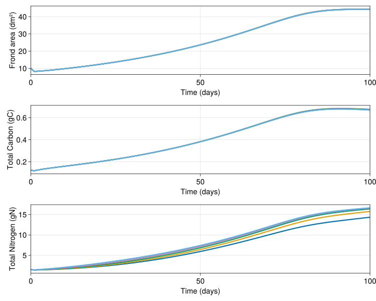

Simple active particle example
In this example we will setup a simple 1D column with the LOBSTER biogeochemical model and active particles modelling the growth of sugar kelp. This demonstrates:
- How to setup OceanBioME's biogeochemical models
- How to add biologically active particles which interact with the biodeochemical model
- How to visualise results
This is forced by idealised mixing layer depth and surface photosynthetically available radiation (PAR) which are setup first
Install dependencies
First we will check we have the dependencies installed
using Pkg
pkg "add OceanBioME, Oceananigans, CairoMakie, JLD2"Model setup
First load the required packages
using OceanBioME, Oceananigans, Printf
using Oceananigans.Units
using Oceananigans.Architectures: arch_array
const year = years = 365days # just for these idealised casesSurface PAR and turbulent vertical diffusivity based on idealised mixed layer depth
Setting up idealised functions for PAR and diffusivity (details here can be ignored but these are typical of the North Atlantic)
@inline PAR⁰(x, y, t) = 60 * (1 - cos((t + 15days) * 2π / year)) * (1 / (1 + 0.2 * exp(-((mod(t, year) - 200days) / 50days) ^ 2))) + 2
@inline H(t, t₀, t₁) = ifelse(t₀ < t < t₁, 1.0, 0.0)
@inline fmld1(t) = H(t, 50days, year) * (1 / (1 + exp(-(t - 100days) / 5days))) * (1 / (1 + exp((t - 330days) / 25days)))
@inline MLD(t) = - (10 + 340 * (1 - fmld1(year - eps(year)) * exp(-mod(t, year) / 25days) - fmld1(mod(t, year))))
@inline κₜ(x, y, z, t) = 1e-2 * (1 + tanh((z - MLD(t))/10)) / 2 + 1e-4
@inline temp(x, y, z, t) = 2.4 * cos(t * 2π / year + 50day) + 10
architecture = CPU()Oceananigans.Architectures.CPU()Grid and PAR field
Define the grid and an extra Oceananigans field for the PAR to be stored in
Lx, Ly = 20meters, 20meters
grid = RectilinearGrid(architecture, size=(1, 1, 50), extent=(Lx, Ly, 200))1×1×50 RectilinearGrid{Float64, Oceananigans.Grids.Periodic, Oceananigans.Grids.Periodic, Oceananigans.Grids.Bounded} on Oceananigans.Architectures.CPU with 3×3×3 halo
├── Periodic x ∈ [0.0, 20.0) regularly spaced with Δx=20.0
├── Periodic y ∈ [0.0, 20.0) regularly spaced with Δy=20.0
└── Bounded z ∈ [-200.0, 0.0] regularly spaced with Δz=4.0Specify the boundary conditions for DIC and O₂ based on the air-sea CO₂ and O₂ flux
CO₂_flux = GasExchange(; gas = :CO₂, temperature = temp, salinity = (args...) -> 35)FluxBoundaryCondition: ContinuousBoundaryFunction gasexchange_function at (Nothing, Nothing, Nothing)Kelp Particle setup
@info "Setting up kelp particles"
n = 5 # number of kelp fronds
z₀ = [-21:5:-1;] * 1.0 # depth of kelp fronds
particles = SLatissima(; architecture,
x = arch_array(architecture, ones(n) * Lx / 2),
y = arch_array(architecture, ones(n) * Ly / 2),
z = arch_array(architecture, z₀),
A = arch_array(architecture, ones(n) * 10.0),
latitude = 57.5,
scalefactor = 500.0,
pescribed_temperature = temp)5 BiogeochemicalParticles with eltype Any:
└── 63 properties: (:architecture, :growth_rate_adjustement, :photosynthetic_efficiency, :minimum_carbon_reserve, :structural_carbon, :exudation, :erosion, :saturation_irradiance, :structural_dry_weight_per_area, :structural_dry_to_wet_weight, :carbon_reserve_per_carbon, :nitrogen_reserve_per_nitrogen, :minimum_nitrogen_reserve, :maximum_nitrogen_reserve, :growth_adjustement_2, :growth_adjustement_1, :maximum_specific_growth_rate, :structural_nitrogen, :photosynthesis_at_ref_temp_1, :photosynthesis_at_ref_temp_2, :photosynthesis_ref_temp_1, :photosynthesis_ref_temp_2, :photoperiod_1, :photoperiod_2, :respiration_at_ref_temp_1, :respiration_at_ref_temp_2, :respiration_ref_temp_1, :respiration_ref_temp_2, :photosynthesis_arrhenius_temp, :photosynthesis_low_temp, :photosynthesis_high_temp, :photosynthesis_high_arrhenius_temp, :photosynthesis_low_arrhenius_temp, :respiration_arrhenius_temp, :current_speed_for_0p65_uptake, :nitrate_half_saturation, :ammonia_half_saturation, :maximum_nitrate_uptake, :maximum_ammonia_uptake, :current_1, :current_2, :current_3, :respiration_reference_A, :respiration_reference_B, :exudation_redfield_ratio, :pescribed_velocity, :pescribed_temperature, :pescribed_salinity, :x, :y, :z, :A, :N, :C, :nitrate_uptake, :ammonia_uptake, :primary_production, :frond_exudation, :nitrogen_erosion, :carbon_erosion, :custom_dynamics, :scalefactor, :latitude)
Setup BGC model
biogeochemistry = LOBSTER(; grid,
surface_phytosynthetically_active_radiation = PAR⁰,
carbonates = true,
variable_redfield = true,
particles)
model = NonhydrostaticModel(; grid,
closure = ScalarDiffusivity(ν = κₜ, κ = κₜ),
biogeochemistry)
set!(model, P = 0.03, Z = 0.03, NO₃ = 4.0, NH₄ = 0.05, DIC = 2239.8, Alk = 2409.0)Simulation
Next we setup the simulation along with some callbacks that:
- Show the progress of the simulation
- Store the model and particles output
- Prevent the tracers from going negative from numerical error (see discussion of this in the positivity preservation implementation page)
simulation = Simulation(model, Δt = 3minutes, stop_time = 100days)
progress_message(sim) = @printf("Iteration: %04d, time: %s, Δt: %s, wall time: %s\n",
iteration(sim),
prettytime(sim),
prettytime(sim.Δt),
prettytime(sim.run_wall_time))
simulation.callbacks[:progress] = Callback(progress_message, TimeInterval(10days))
filename = "kelp"
simulation.output_writers[:profiles] = JLD2OutputWriter(model, merge(model.tracers, model.auxiliary_fields),
filename = "$filename.jld2",
schedule = TimeInterval(1day),
overwrite_existing = true)
simulation.output_writers[:particles] = JLD2OutputWriter(model, (; particles),
filename = "$(filename)_particles.jld2",
schedule = TimeInterval(1day),
overwrite_existing = true)
scale_negative_tracers = ScaleNegativeTracers(; model, tracers = (:NO₃, :NH₄, :P, :Z, :sPON, :bPON, :DON))
simulation.callbacks[:neg] = Callback(scale_negative_tracers; callsite = UpdateStateCallsite())Run!
Finally we run the simulation
run!(simulation)[ Info: Initializing simulation...
Iteration: 0000, time: 0 seconds, Δt: 3 minutes, wall time: 0 seconds
[ Info: ... simulation initialization complete (7.926 seconds)
[ Info: Executing initial time step...
[ Info: ... initial time step complete (1.331 minutes).
Iteration: 4800, time: 10 days, Δt: 3 minutes, wall time: 1.813 minutes
Iteration: 9600, time: 20 days, Δt: 3 minutes, wall time: 2.152 minutes
Iteration: 14400, time: 30 days, Δt: 3 minutes, wall time: 2.491 minutes
Iteration: 19200, time: 40 days, Δt: 3 minutes, wall time: 2.834 minutes
Iteration: 24000, time: 50 days, Δt: 3 minutes, wall time: 3.193 minutes
Iteration: 28800, time: 60 days, Δt: 3 minutes, wall time: 3.541 minutes
Iteration: 33600, time: 70 days, Δt: 3 minutes, wall time: 3.900 minutes
Iteration: 38400, time: 80 days, Δt: 3 minutes, wall time: 4.242 minutes
Iteration: 43200, time: 90 days, Δt: 3 minutes, wall time: 4.595 minutes
[ Info: Simulation is stopping after running for 4.957 minutes.
[ Info: Simulation time 100 days equals or exceeds stop time 100 days.
Iteration: 48000, time: 100 days, Δt: 3 minutes, wall time: 4.957 minutes
Now we can visualise the results with some post processing to diagnose the air-sea CO₂ flux - hopefully this looks different to the example without kelp!
P = FieldTimeSeries("$filename.jld2", "P")
NO₃ = FieldTimeSeries("$filename.jld2", "NO₃")
Z = FieldTimeSeries("$filename.jld2", "Z")
sPOC = FieldTimeSeries("$filename.jld2", "sPOC")
bPOC = FieldTimeSeries("$filename.jld2", "bPOC")
DIC = FieldTimeSeries("$filename.jld2", "DIC")
Alk = FieldTimeSeries("$filename.jld2", "Alk")
x, y, z = nodes(P)
times = P.times101-element Vector{Float64}:
0.0
86400.0
172800.0
259200.0
345600.0
432000.0
518400.0
604800.0
691200.0
777600.0
864000.0
950400.0
1.0368e6
1.1232e6
1.2096e6
1.296e6
1.3824e6
1.4688e6
1.5552e6
1.6416e6
1.728e6
1.8144e6
1.9008e6
1.9872e6
2.0736e6
2.16e6
2.2464e6
2.3328e6
2.4192e6
2.5056e6
2.592e6
2.6784e6
2.7648e6
2.8512e6
2.9376e6
3.024e6
3.1104e6
3.1968e6
3.2832e6
3.3696e6
3.456e6
3.5424e6
3.6288e6
3.7152e6
3.8016e6
3.888e6
3.9744e6
4.0608e6
4.1472e6
4.2336e6
4.32e6
4.4064e6
4.4928e6
4.5792e6
4.6656e6
4.752e6
4.8384e6
4.9248e6
5.0112e6
5.0976e6
5.184e6
5.2704e6
5.3568e6
5.4432e6
5.5296e6
5.616e6
5.7024e6
5.7888e6
5.8752e6
5.9616e6
6.048e6
6.1344e6
6.2208e6
6.3072e6
6.3936e6
6.48e6
6.5664e6
6.6528e6
6.7392e6
6.8256e6
6.912e6
6.9984e6
7.0848e6
7.1712e6
7.2576e6
7.344e6
7.4304e6
7.5168e6
7.6032e6
7.6896e6
7.776e6
7.8624e6
7.9488e6
8.0352e6
8.1216e6
8.208e6
8.2944e6
8.3808e6
8.4672e6
8.5536e6
8.64e6We compute the air-sea CO₂ flux at the surface (corresponding to vertical index k = grid.Nz) and the carbon export by computing how much carbon sinks below some arbirtrary depth; here we use depth that corresponds to k = grid.Nz - 20.
air_sea_CO₂_flux = zeros(length(times))
carbon_export = zeros(length(times))
for (i, t) in enumerate(times)
air_sea_CO₂_flux[i] = CO₂_flux.condition.parameters(0.0, 0.0, t, DIC[1, 1, grid.Nz, i], Alk[1, 1, grid.Nz, i], temp(1, 1, 0, t), 35)
carbon_export[i] = sPOC[1, 1, grid.Nz-20, i] * model.biogeochemistry.sinking_velocities.sPOM.w[1, 1, grid.Nz-20] +
bPOC[1, 1, grid.Nz-20, i] * model.biogeochemistry.sinking_velocities.bPOM.w[1, 1, grid.Nz-20]
endBoth air_sea_CO₂_flux and carbon_export are in units mmol CO₂ / (m² s).
using CairoMakie
fig = Figure(resolution = (1000, 1500), fontsize = 20)
axis_kwargs = (xlabel = "Time (days)", ylabel = "z (m)", limits = ((0, times[end] / days), (-85meters, 0)))
axP = Axis(fig[1, 1]; title = "Phytoplankton concentration (mmol N/m³)", axis_kwargs...)
hmP = heatmap!(times / days, z, interior(P, 1, 1, :, :)', colormap = :batlow)
Colorbar(fig[1, 2], hmP)
axNO₃ = Axis(fig[2, 1]; title = "Nitrate concentration (mmol N/m³)", axis_kwargs...)
hmNO₃ = heatmap!(times / days, z, interior(NO₃, 1, 1, :, :)', colormap = :batlow)
Colorbar(fig[2, 2], hmNO₃)
axZ = Axis(fig[3, 1]; title = "Zooplankton concentration (mmol N/m³)", axis_kwargs...)
hmZ = heatmap!(times / days, z, interior(Z, 1, 1, :, :)', colormap = :batlow)
Colorbar(fig[3, 2], hmZ)
axD = Axis(fig[4, 1]; title = "Detritus concentration (mmol C/m³)", axis_kwargs...)
hmD = heatmap!(times / days, z, interior(sPOC, 1, 1, :, :)' .+ interior(bPOC, 1, 1, :, :)', colormap = :batlow)
Colorbar(fig[4, 2], hmD)
CO₂_molar_mass = (12 + 2 * 16) * 1e-3 # kg / mol
axfDIC = Axis(fig[5, 1], xlabel = "Time (days)", ylabel = "Flux (kgCO₂/m²/year)",
title = "Air-sea CO₂ flux and Sinking", limits = ((0, times[end] / days), nothing))
lines!(axfDIC, times / days, air_sea_CO₂_flux / 1e3 * CO₂_molar_mass * year, linewidth = 3, label = "Air-sea flux")
lines!(axfDIC, times / days, carbon_export / 1e3 * CO₂_molar_mass * year, linewidth = 3, label = "Sinking export")
Legend(fig[5, 2], axfDIC, framevisible = false)
fig
We can also have a look at how the kelp particles evolve
using JLD2
file = jldopen("$(filename)_particles.jld2")
iterations = keys(file["timeseries/t"])
A, N, C = ntuple(n -> zeros(5, length(iterations)), 3)
times = zeros(length(iterations))
for (i, iter) in enumerate(iterations)
particles = file["timeseries/particles/$iter"]
A[:, i] = particles.A
N[:, i] = particles.N
C[:, i] = particles.C
times[i] = file["timeseries/t/$iter"]
end
fig = Figure(resolution = (1000, 800), fontsize = 20)
axis_kwargs = (xlabel = "Time (days)", limits = ((0, times[end] / days), nothing))
ax1 = Axis(fig[1, 1]; ylabel = "Frond area (dm²)", axis_kwargs...)
[lines!(ax1, times / day, A[n, :], linewidth = 3) for n in 1:5]
ax2 = Axis(fig[2, 1]; ylabel = "Total Carbon (gC)", axis_kwargs...)
[lines!(ax2, times / day, (@. A * (N + particles.structural_nitrogen) * particles.structural_dry_weight_per_area)[n, :], linewidth = 3) for n in 1:5]
ax3 = Axis(fig[3, 1]; ylabel = "Total Nitrogen (gN)", axis_kwargs...)
[lines!(ax3, times / day, (@. A * (C + particles.structural_carbon) * particles.structural_dry_weight_per_area)[n, :], linewidth = 3) for n in 1:5]
fig
This page was generated using Literate.jl.